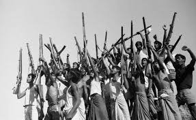
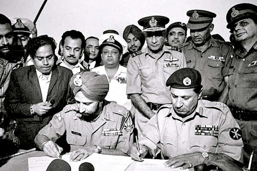

ORAL HISTORY
Voices of 1971
Listen to recorded interviews and explore personal experiences connected to the Liberation War.

A Witness to 1971
Interview Participant
Background:
This interview presents the memories and experiences of an individual who witnessed important events during the Liberation War.
Testimony Summary:
The testimony describes the uncertainty, courage and determination experienced by ordinary people during the war.
Listen to the interview

Memories of the Liberation
Interview Participant
Background:
The interview records personal memories surrounding the Liberation War and the struggle of the people of Bangladesh.
Testimony Summary:
The speaker recalls the challenges faced by families and communities and describes the hope for an independent Bangladesh.
Listen to the interview